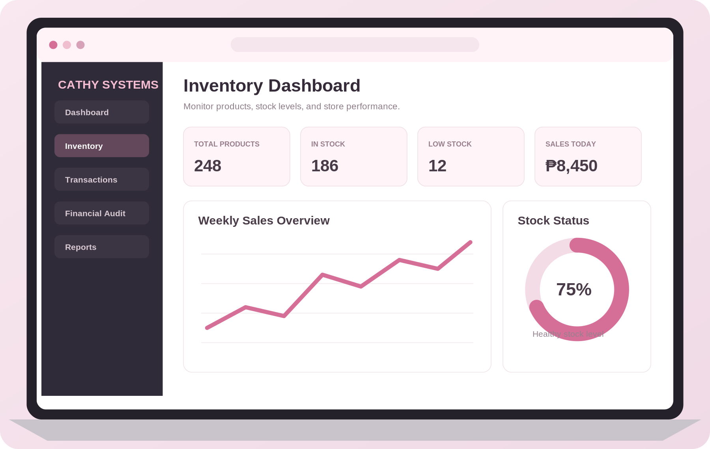
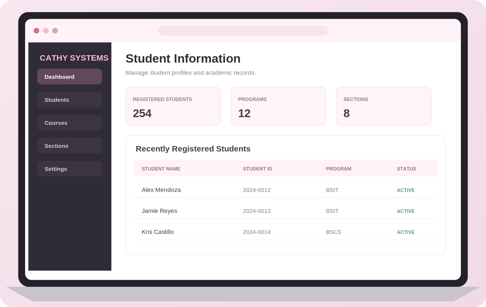
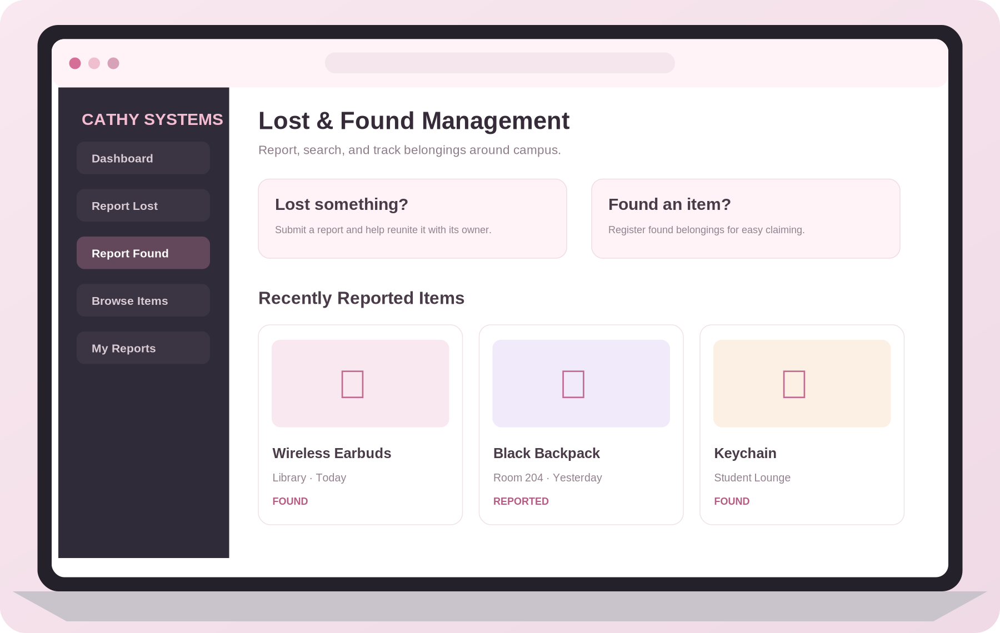

Frontend Development
Structuring and styling web pages with a focus on clarity and usability.
INFORMATION TECHNOLOGY PORTFOLIO
HELLO, I'M
IT Student / Aspiring Web Developer
I’m an Information Technology student interested in developing practical web-based solutions. I enjoy learning new technologies, strengthening my technical foundation, and creating digital experiences that are clear, useful, and accessible.
01 — PROFILE
Motivated by curiosity.
Driven to keep improving.
I am a motivated and hardworking student who is passionate about technology and computer programming. I am eager to learn new skills, improve my knowledge, and gain experience in the field of Information Technology.
I value responsibility, adaptability, and teamwork. Through academic projects and hands-on practice, I aim to strengthen my abilities and contribute to the development of reliable, user-friendly digital solutions.
02 — TECHNICAL CAPABILITIES
Technologies and tools used in learning, practice, and academic development.
Structuring and styling web pages with a focus on clarity and usability.
Learning server-side programming and the foundations of web applications.
Working with structured information and relational data storage.
Using common tools for coding, local development, and version control.
Basic web development · Website design · Willingness to learn
03 — SELECTED PROJECTS
A selection of web-based system projects focused on organizing records, improving workflows, and making information easier to manage.

01 / INVENTORY MANAGEMENTDesigned to support clothing inventory management, stock monitoring, sales recording, and financial reporting in one organized system.

02 / STUDENT RECORDSDesigned to organize student information and academic records, supporting more efficient registration, record updates, and information retrieval.

03 / CAMPUS SERVICESDesigned to help students report lost belongings, register found items, search item records, and monitor the status of reported belongings.
The project images are illustrative interface concepts created for presentation purposes and do not represent screenshots of deployed applications.
04 — EDUCATION
Building a foundation in information technology through formal study and practical application.
Computer Communication Development Institute
Brgy. 14 Sikatuna St., Old Albay, Legazpi City
EXPECTED GRADUATION202805 — PERSONAL STRENGTHS
06 — CONTACT
For inquiries, collaboration, or opportunities to learn and grow, feel free to reach out.